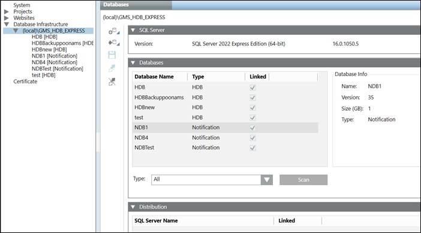

Link an HDB to the SQL Server
You need to link an HDB to the SQL Server only when you scan and select an already existing HDB. When you create a new HDB it gets automatically linked to the SQL Server.
- You have selected an SQL Server.
- One or more History Databases are available on the selected server.
- In the SMC tree, select Database Infrastructure > [SQL server name].
- Select the Historic Data tab.
- Open the Databases expander.
- From the Type drop down list, select the type of database to be detected on the SQL Server instance. For example, to detect the databases associated with the Notification extension, select Notification in the list.
- Click Scan.
- The History Databases found on the basis of the selected type on the SQL Server instance display.
- Select the database to be linked to the SQL server and thereafter click Link .
- The History Database is linked and started. The Database Info displays the general settings for the linked History Database.
